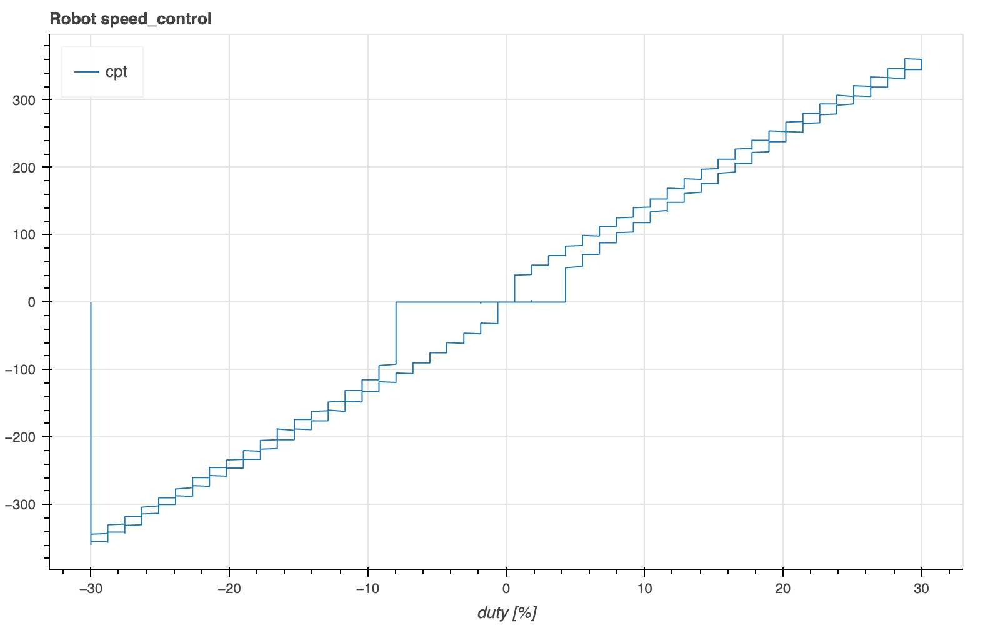

Motor Speed vs Duty Cycle
Contents
Motor Speed vs Duty Cycle¶
The relation of motor rpm and duty cycle is nonlinear, especially around the origin. This can lead to problems with feedback control.
Ideally motor rpm should be proportional to the input. Unfortunately, simply control
Setup the environment:
%%host
import nest_asyncio, sys, os
nest_asyncio.apply()
sys.path.append(os.path.join(os.getenv('IOT_PROJECTS'), 'robot/code/rpi'))
# fix wiring issue
from gpiozero import Button as Pin
try:
Pin(14, pull_up=False)
except:
pass
Open Loop Response¶
%%host
from asyncio_mqtt import Client
from struct import pack
import numpy as np
import asyncio, json, os
import stm32
from robot import *
print(f"plot @ http://{os.getenv('DNS_NAME')}.local:5006")
MQTT_BROKER = os.getenv("HOST_IP")
TOPIC_ROOT = "public/vis"
PARAM_DUTY1 = const(PARAM_RESERVED+0) # motor1 duty cycle setpoint
PARAM_DUTY2 = const(PARAM_RESERVED+1) # motor2 duty cycle setpoint
class DutyControl:
async def main(self):
async with Client(MQTT_BROKER) as client, \
Comm(self.state_listener) as robot:
self.client = client
await client.publish(f"{TOPIC_ROOT}/new", json.dumps({
"columns": [ "duty [%]", "cpt" ],
"rollover": 1000,
"args": { "title": "Robot CPT vs Duty Cycle" },
}))
await robot.set(PARAM_FS, 5)
await robot.start('duty_control')
for duty in np.linspace(-100, 100, 50):
await robot.set(PARAM_DUTY1, duty)
await asyncio.sleep(1)
for duty in np.linspace(100, -100, 50):
await robot.set(PARAM_DUTY1, duty)
await asyncio.sleep(1)
async def state_listener(self, state):
try:
duty = state[STATE_DUTY1]
cpt1 = state[STATE_CPT1]
await self.client.publish(f"{TOPIC_ROOT}/bin", pack('!2f', duty, cpt1))
except Exception as e:
print("*****", e)
dc = DutyControl()
asyncio.run(dc.main())
Ah, there is a dead zone around zero. That’s not surprising (and of course would be rather “worse” with a combustion engine). There is also a little hysteresis. This could pose problems with feedback controllers, especially balancing since that runs the motors around zero speed.

Let’s zoom in:
%%host
import nest_asyncio, sys, os
nest_asyncio.apply()
sys.path.append(os.path.join(os.getenv('IOT_PROJECTS'), 'robot/code/rpi'))
from asyncio_mqtt import Client
from struct import pack
import numpy as np
import asyncio, json, os
import stm32
from robot import *
print(f"plot @ http://{os.getenv('DNS_NAME')}.local:5006")
MQTT_BROKER = os.getenv("HOST_IP")
TOPIC_ROOT = "public/vis"
PARAM_DUTY1 = const(PARAM_RESERVED+0) # motor1 duty cycle setpoint
PARAM_DUTY2 = const(PARAM_RESERVED+1) # motor2 duty cycle setpoint
class Control:
def __init__(self, controller):
self.controller = controller
async def main(self):
async with Client(MQTT_BROKER) as client, \
Comm(self.state_listener) as robot:
self.client = client
await client.publish(f"{TOPIC_ROOT}/new", json.dumps({
"columns": [ "duty [%]", "cpt" ],
"rollover": 1000,
"args": { "title": f"Robot {self.controller}" },
}))
await robot.set(PARAM_FS, 5)
await robot.start(self.controller)
range = 30
N = 50
for duty in np.linspace(-range, range, N):
await robot.set(PARAM_DUTY1, duty)
await asyncio.sleep(1)
for duty in np.linspace(range, -range, N):
await robot.set(PARAM_DUTY1, duty)
await asyncio.sleep(1)
async def state_listener(self, state):
try:
duty = PARAM[PARAM_DUTY1]
cpt1 = state[STATE_CPT1]
await self.client.publish(f"{TOPIC_ROOT}/bin", pack('!2f', duty, cpt1))
except Exception as e:
print("*****", e)
c = Control("duty_control")
asyncio.run(c.main())

Feed-Forward Control¶
Perhaps adding an offset to the duty input will improve the situation. speed_control does just that:
%%writefile $IOT_PROJECTS/robot/code/stm32/lib/speed_control.py
from controller import *
from param import PARAM
PARAM_DUTY1 = const(2) # motor1 duty cycle setpoint
PARAM_DUTY2 = const(3) # motor2 duty cycle setpoint
class Control(Controller):
@staticmethod
def fix_duty(duty):
if abs(duty) > 1:
duty = duty+8.5 if duty>0 else duty-8.5
return duty
def update(self):
# set motor duty cycle
self.state[STATE_DUTY1] = self.fix_duty(PARAM[PARAM_DUTY1])
self.state[STATE_DUTY2] = self.fix_duty(PARAM[PARAM_DUTY2])
Writing /home/iot/iot49.org/docs/projects/robot/code/stm32/lib/speed_control.py
%%host
c = Control("speed_control")
asyncio.run(c.main())

Not perfect, but much improved.
PID Controller¶
In the PID controller shown below, the “plant/process” is the controlled system (e.g. a motor). r(t) is the setpoint (desired value, e.g. motor rpm), y(t) is the actual value (e.g. motor rpm measured by an encoder), and u(t) is the control input (e.g. motor duty cycle). The controller attempts to minimize the error e(t), i.e. make y(t) follow r(t).

PID controller code:
%%writefile $IOT_PROJECTS/robot/code/stm32/lib/PID.py
# Based on https://github.com/br3ttb/Arduino-PID-Library
from array import array
# config vector (may be dynamically updated)
SETPOINT = const(0) # setpoint
KP = const(1) # proportional term
KI = const(2) # scaled by /fs
KD = const(3) # scaled by *fs
U_MIN = const(4) # minimum PID output (anti-windup)
U_MAX = const(5) # maximum PID output (anti-windup)
# state (used internally)
_SUM = const(0)
_Y = const(1)
class PID:
def __init__(self, config):
self.config = config
self.state = array('f', [0, 0])
def update(self, y):
"""compute & return new PID output u from plant output y"""
c = self.config
s = self.state
err = c[SETPOINT] - y
s[_SUM] += self._clip(c[KI] * err) # integrator state
u = self._clip(c[KP] * err + s[_SUM] - c[KD] * (y - s[_Y]))
s[_Y] = y # save last y (for KD term)
return u
def _clip(self, value):
c = self.config
if value > c[U_MAX]: return c[U_MAX]
if value < c[U_MIN]: return c[U_MIN]
return value
Writing /home/iot/iot49.org/docs/projects/robot/code/stm32/lib/PID.py
Feedback Speed Controller¶
Now we use a PID controller to determine the duty cycle to achieve a set speed determined by the cpt count.
We use the average cpt count for the two motors. A second PID controller will be added later to set the difference for turning.
%%writefile $IOT_PROJECTS/robot/code/stm32/lib/speed_control.py
from controller import *
from param import PARAM, PARAM_RESERVED
from pid import PID
P0 = const(2)
assert P0 == PARAM_RESERVED
# cpt PID
SET_CPT = const(P0+0)
KP = const(P0+1)
KI = const(P0+2)
KD = const(P0+3)
U_MIN = const(P0+4)
U_MAX = const(P0+5)
PARAM[U_MIN] = -100
PARAM[U_MAX] = 100
class Control(Controller):
def __init__(self, uart):
super().__init__(uart)
self.pid = PID(memoryview(PARAM)[SET_CPT:U_MAX+1])
def update(self):
state = self.state
cpt_sum = state[STATE_CPT1] + state[STATE_CPT2]
duty = self.pid.update(cpt_sum)
# uncomment for open-loop control
# duty = PARAM[SET_CPT]
duty = self.fix_duty(duty)
state[STATE_DUTY1] = state[STATE_DUTY2] = duty
@staticmethod
def fix_duty(duty):
if abs(duty) > 1:
duty = duty+8.5 if duty>0 else duty-8.5
return duty
Writing /home/iot/iot49.org/docs/projects/robot/code/stm32/lib/speed_control.py
%%host
import nest_asyncio, sys, os
nest_asyncio.apply()
sys.path.append(os.path.join(os.getenv('IOT_PROJECTS'), 'robot/code/rpi'))
# fix wiring issue
from gpiozero import Button as Pin
try:
Pin(14, pull_up=False)
except:
pass
from asyncio_mqtt import Client
from struct import pack
import numpy as np
import asyncio, json, os
import stm32
from robot import *
print(f"plot @ http://{os.getenv('DNS_NAME')}.local:5006")
MQTT_BROKER = os.getenv("HOST_IP")
TOPIC_ROOT = "public/vis"
P0 = const(2)
assert P0 == PARAM_RESERVED
# cpt PID
SET_CPT = const(P0+0)
KP = const(P0+1)
KI = const(P0+2)
KD = const(P0+3)
U_MIN = const(P0+4)
U_MAX = const(P0+5)
FS = 100
SET_POINT_CPT = 5_000/FS
class TestRemote(Remote):
async def handle(self, dt: float, code: str, value: float):
if value < 0:
print(f"PID {code} = {value} < 0 (ignored)")
return
value *= 0.001
if code == '1':
await self.robot.set(KP, value*FS)
elif code == '2':
await self.robot.set(KI, value)
elif code == '3':
await self.robot.set(KD, value*FS*FS)
class Control:
async def main(self):
self.publish = [ "t", "set cpt", "cpt", "err", "duty" ]
async with Client(MQTT_BROKER) as client, \
Comm(self.state_listener) as robot, \
TestRemote() as remote:
remote.robot = robot
self.client = client
await self.client.publish(f"{TOPIC_ROOT}/new", json.dumps({
"columns": self.publish,
"rollover": int(6*FS),
"layout": "line_plot",
"args": {
"title": f"Robot PID cpt",
"plot_width": 1200,
"plot_height": 700,
"y_range": (-2*SET_POINT_CPT, 2*SET_POINT_CPT),
},
}))
await robot.set(PARAM_FS, FS)
await robot.start("speed_control")
await robot.get(U_MIN)
await robot.get(U_MAX)
set_cpt = SET_POINT_CPT
while not remote.stop:
await robot.set(SET_CPT, set_cpt)
await asyncio.sleep(1)
set_cpt = -set_cpt
async def state_listener(self, state):
try:
t = state[STATE_K]/FS
set_point = PARAM[SET_CPT]
cpt = state[STATE_CPT1] + state[STATE_CPT2]
duty = state[STATE_DUTY1]
err = set_point - cpt
await self.client.publish(
f"{TOPIC_ROOT}/bin",
pack(f'!{len(self.publish)}f', t, set_point, cpt, err, duty))
except Exception as e:
print("*****", e)
def _clip(self, value):
if value > PARAM[U_MAX]: return PARAM[U_MAX]
if value < PARAM[U_MIN]: return PARAM[U_MIN]
return value
stm32.hard_reset()
stm32.rsync()
try:
c = Control()
asyncio.run(c.main())
except KeyboardInterrupt:
pass
print(f"kp = {PARAM[KP]}")
print(f"ki = {PARAM[KI]}")
print(f"kd = {PARAM[KD]}")
plot @ http://pi4robot.local:5006
UPDATE /flash/lib/speed_control.py
MCU: start Comm @ 1000000 baud
scanning for iot49-robot
connecting to iot49-robot ... connected
kp = 1.7999999523162842
ki = 0.11800000071525574
kd = 0.0